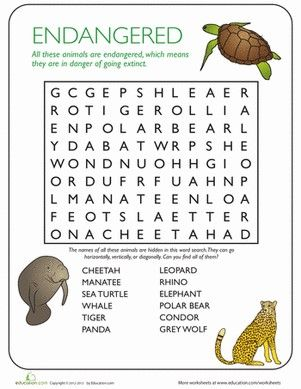

Animales en peligro de extinción
Se calcula que hay unas 7,7 millones de especies de animales en el planeta. Un alto porcentaje de estas especies corresponde con animales en peligro de extinción, aunque no todos corren el mismo peligro. Te presentamos 10 de las especies más amenazadas.
Actualmente, hay muchas especies de animales en peligro de extinción. Las razones que amenazan la supervivencia de las especies de flora y fauna son muy variadas, aunque la acción del hombre y sus efectos sobre el cambio climático juegan un papel vital en la velocidad a la que este proceso tiene lugar. La acción temprana sobre los animales en peligro de extinción puede dar sus frutos, haciendo que las especies se recuperen a través de una reproducción supervisada. Pero hay otros muchos animales cuya extinción es inminente e incluso inevitable. La caza furtiva es una de las causas principales que provocan la desaparición de miles de especies cada año en el mundo. El tráfico de animales y la caza ilegal son dos de las mayores amenazas para la especies protegidas. Cada año, una media de 100 tigres son asesinados a manos de estos furtivos. Otro de los motivos que están poniendo en serio peligro la supervivencia de miles de especies es la destrucción de su hábitat debido a las abusivas actividades humanas. Esto provoca desplazamientos de las especies hacia otros ecosistemas que acaban alterando tanto la fauna y flora, como su propio desarrollo colocándoos al borde de la extinción.
¿Por que se extinguen los animales?
Durante la larga historia del planeta han habido muchas extinciones causadas por cambios climáticos, vulcanismo, inundaciones, sequías. Sin embargo, en los últimos años la gran mayoría de las extinciones de flora y fauna se deben al impacto directo o indirecto de las actividades humanas (Crisis de la Biodiversidad).
¿Qué sucede cuando los animales se extinguen?
Es muy importante entender que cada vez que una especie desaparece se genera un desequilibrio en su ecosistema, ocasionando la muerte de otros animales o la superpoblación de otra especie, lo que hace que el nicho o espacio donde estos seres interactúan sufra grandes cambios que pueden incluso afectarnos a nosotros ...
¿Cómo evitar que los animales se extinguen?
Como repaso debemos recordar las acciones que permiten cuidar a las especies son: Prohibir la caza. Evitar la deforestación de los diferentes ecosistemas. Delimitar las áreas protegidas y reservas naturales. Poner en práctica acciones de consumo responsable. Promover planes para la reproducción en cautiverio.
Sin animales ni biodiversidad, moriremos... La comunidad científica lleva años alertando: si destruimos la vida silvestre, el ser humano se extinguirá. La XIV Conferencia sobre Biodiversidad de las Naciones Unidas pretende ser la antesala de un gran acuerdo global para proteger la naturaleza que se firme en 2020. El informe Planeta Vivo 2018 de WWF señala que la población animal y vegetal decrece a un ritmo alarmante: el 60% de la vida silvestre ha desaparecido entre 1970 y 2014.

COSAS QUE PUEDES HACER PARA PRESERVAR ESPECIES EN PELIGRO DE EXTINCIÓN
Promover planes para la reproducción en cautiverio. ... Contribuir a la disminución de la tala de árboles con el reciclaje. ... Respetar las áreas protegidas y reservas naturales. ... Comprar con responsabilidad. ... Restaurar los ecosistemas. ... Hacer donaciones.